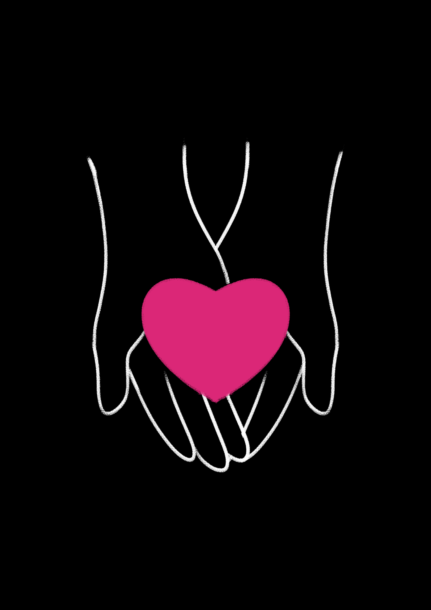

Her Values
She is fascinated by the human ability to learn, adapt, and change.
I believe that the world of the future is dependent on the new generation of thinkers.
I believe in the moral dimension of technology.
I believe that life is about shared belonging.
She believes in widening the radius of compassion and in the power of mutuality.
She believes in listening to the inner voice amid the rumble.
She believes that it is necessary to reinvent oneself.
She believes that learning & teaching are fundamentally collaborative processes.
She lives by the motto – quality learning for all.